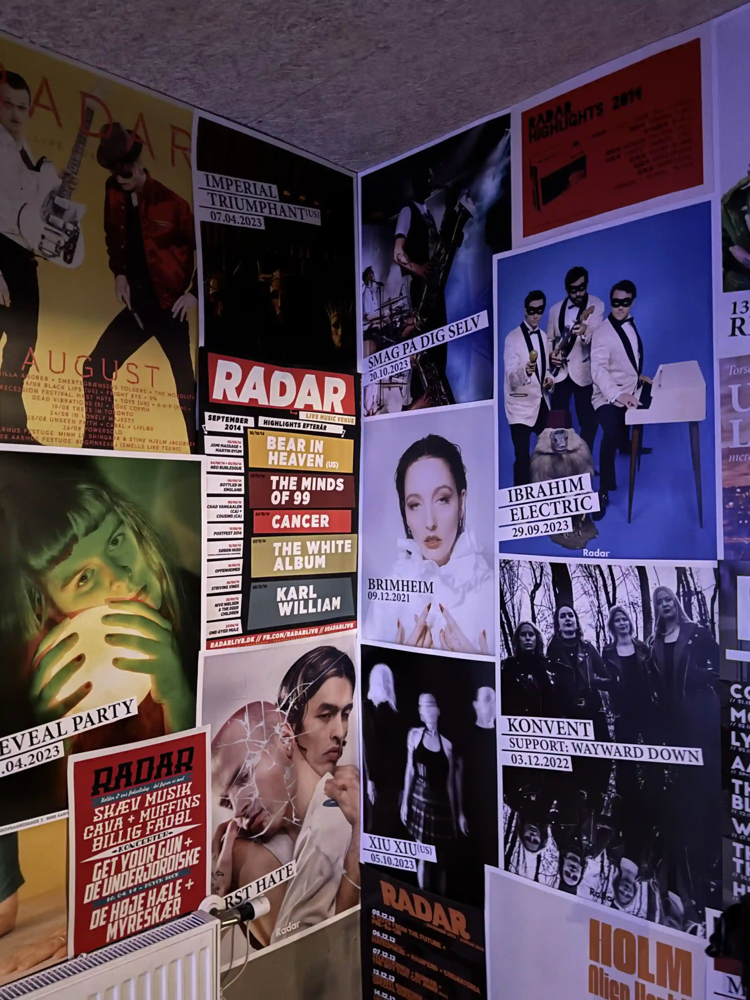

☰
Om Radar
Historie
Mission og Vision+
Succeshistorier
Events
Kommende events og koncerter
Tidligere events
Specialarrangementer
Støt Radar
Crowdfunding
Medlemskab
Frivillige+
Samarbejde
Fællesskab
Radar Heroes+
Idébank
KØB DIN BILLET HER
NÆSTE BEGIVENHED
29/01 ANNA ROEMER
31/01 BARYL
01/02 AARHUS DRAG EXTRAVAGANZA
06/02 GORGEOUS
07/02 BUSHBABIES
14/02 BISSESVINET
15/02 SYL + OMSORG
SE ALLE TIDER HER
FEMY: "DET KOMMER TIL AT KUNNE MÆRKES, HVIS RADAR FORSVINDER"
LÆS INTERVIEWET MED FEMY HER
VÆR MED TIL AT GØRE EN
FORSKEL - BLIV FRIVILLIG!
TILMELD

HJÆLP MED AT HOLDE
LIV I MISSIONEN!
DONÉR
DEL BUDSKABET
SOCIALE MEDIER
BRUG
#SUPPORTRADAR
NYHEDSBREV
Modtag nyheder om kommende
koncerter, arrangementer og events.
TILMELD